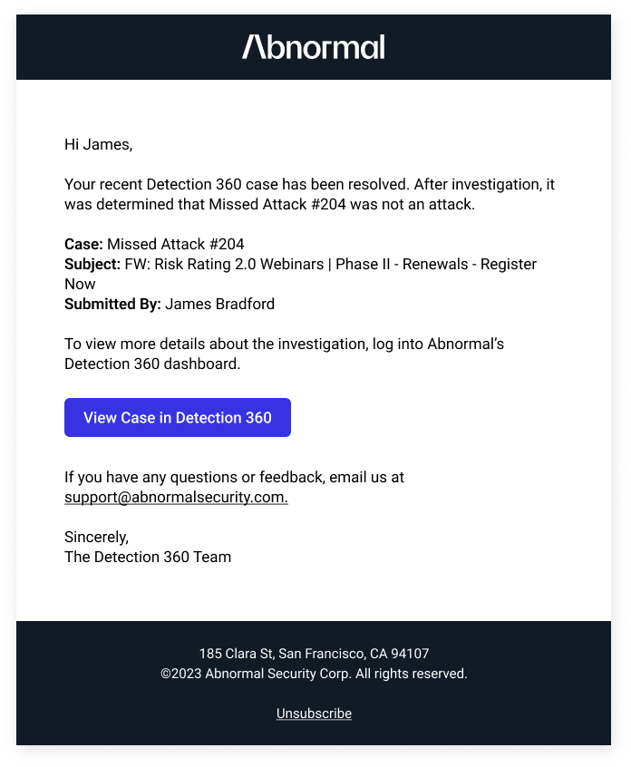
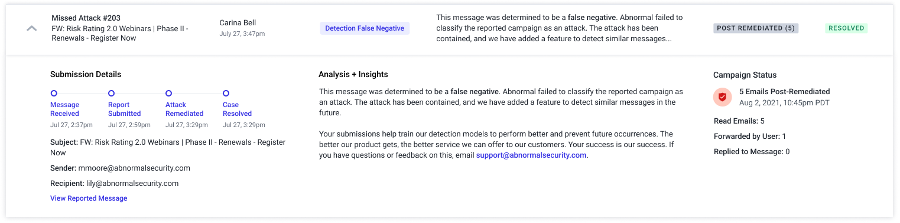

Abnormal learns the behavior of every identity in a company’s email environment and analyzes the risk of every event to block attacks. By understanding what is normal, Abnormal can detect and prevent the malicious and unwanted emails that bypass traditional solutions.
Sometimes, Abnormal gets it wrong. Detection 360 is the place to go to report missed attacks + false positives, and get a response from Abnormal.
For high-profile customers, or bad missed attacks, Abnormal’s Support team will write a document explaining why the attack was missed and how we’re fixing it.
If we provide automated insights to the customer, this will save company time, as well as improve the customer experience by being able to provide insights for every case.
I interviewed customers to get a better understanding of why users are using Detection 360 and what their needs are. The research findings are in the presentation below.
Based on the user research, and my own analysis, I identified problems with the current UI.
I redesigned the D360 experience, featuring an expandable table, as shown below. I combined missed attacks and false positives into one table by default, with an option to filter. Careful attention was paid to displaying the most critical information in the table rows, in a way that's easily scannable, and providing more details upon expansion. The details are grouped in a way that aligns with the rows above.
I also designed a version where all information is displayed in the table. However, customers preferred having the expandable table so that they can quickly scan it and only gather more info when needed.
Many variations needed to be designed, depending on the status of the submission, the outcome, or type of report.
A significant aspect to this project was designing the messaging in a way that was easy for engineering to implement as an automated response, but still felt human to the user. It needed to provide sufficient detail while also being easily understood.
After releasing the initial redesign, we followed up with additional iterations based on feedback both from the initial research and post-release. I worked with the PM and engineering to come up with a roadmap.
Customers needed more filtering options to quickly find the cases they were looking for.
We found that users were having to regularly check to see if their report had been addressed, which was a hassle, or they were missing that it had been, because they weren't checking. To resolve this pain, we built email notifications.
Users need to download the results for reporting purposes.
Users sometimes need to contact support about a case, and we found that it was a convoluted, error-prone process, both for the user and support. We decided to add the ability to contact support directly about a case.
Users wanted to know exactly when an attack was remediated and when a case was resolved so we added timestamps to the timeline.
Sometimes users submit reports by mistake, and there's no way to cancel it.
We automated 100% of responses to Detection 360 submissions, saving 177 documents being written per week, or ~90 hours of effort by our security analyst team.